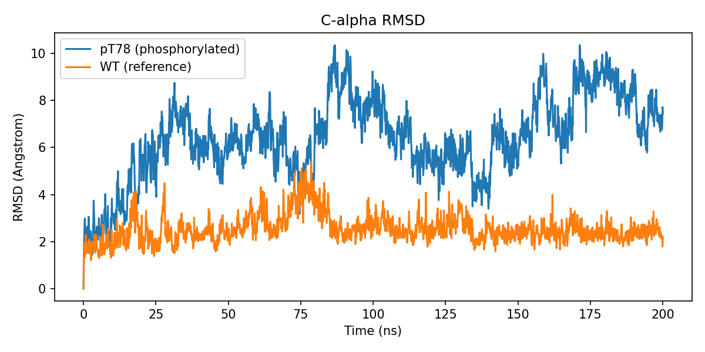
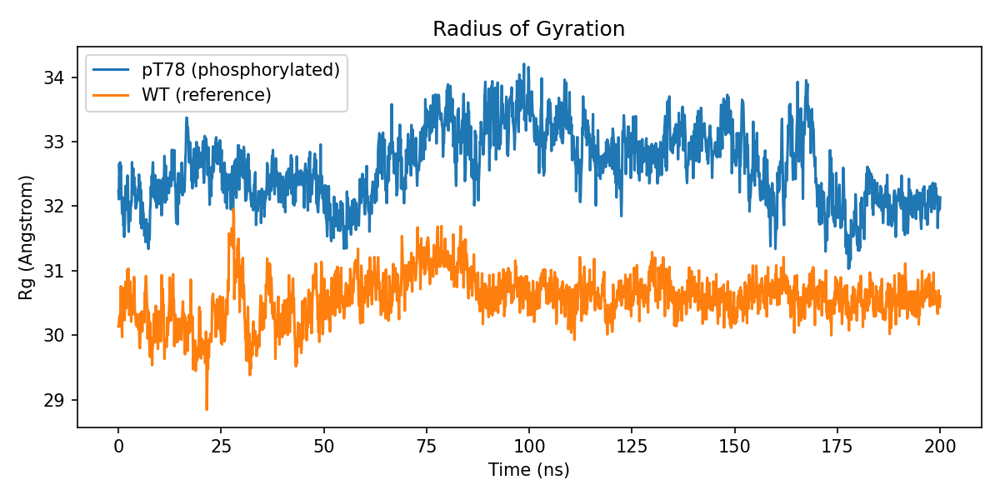
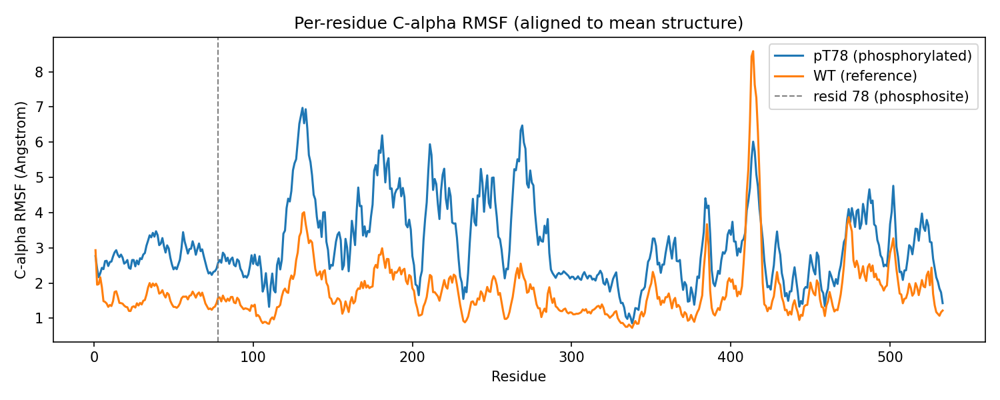
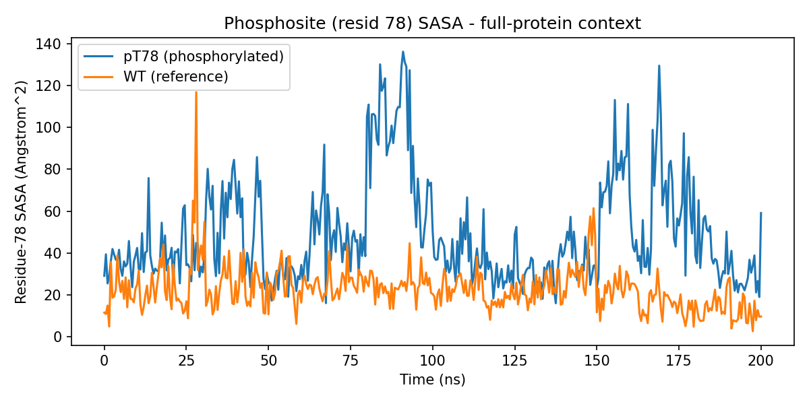
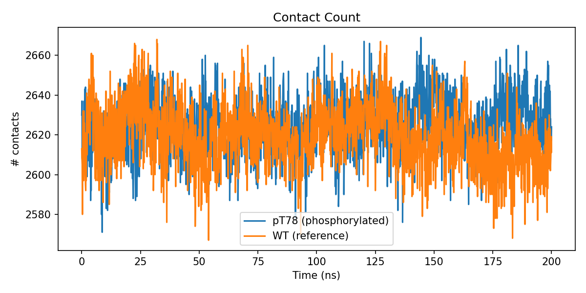

Phosphoglycerate dehydrogenase (PHGDH) catalyzes the first, rate-limiting step of the de novo serine synthesis pathway and is recurrently amplified in breast cancer and melanoma, making it an actively pursued oncology drug target. Post-translational phosphorylation is a common mechanism for tuning metabolic-enzyme conformation and activity, yet the atomic-level structural and dynamical consequences of specific PHGDH phosphosites remain largely uncharacterized. Here we report two independent, 200-ns, all-atom, explicit-solvent molecular dynamics (MD) simulations of human PHGDH — one bearing a phosphothreonine at position 78 (pT78) and one wild-type (WT) reference — run under matched conditions (CHARMM36m force field, TIP3P water, 150 mM NaCl, GROMACS 2022.3, full GPU residency on NVIDIA RTX A6000 hardware). Relative to WT, the pT78 system exhibited a markedly larger and multi-modal Cα root-mean-square deviation (RMSD; last-quarter mean 7.9 ± 1.1 Å versus 2.4 ± 0.3 Å), an elevated radius of gyration (32.3 ± 0.5 Å versus 30.6 ± 0.2 Å) that fluctuated in register with the WT trajectory but with amplified amplitude, a near-uniform ~1.5–2-fold increase in per-residue Cα root-mean-square fluctuation (RMSF) along the entire 533-residue chain, and a phosphosite solvent-accessible surface area (SASA) that repeatedly spiked 3–4-fold above its wild-type-like baseline in temporal register with the higher-RMSD/Rg excursions. In contrast, global and local (residues 70–86) secondary-structure content and the overall Cα–Cα contact count were essentially indistinguishable between the two systems throughout the trajectory. These observations are consistent with phosphorylation-induced broadening of the accessible conformational ensemble — increased inter-domain and loop-level breathing motions — rather than local unfolding or secondary-structure loss. Given PHGDH's role as a validated metabolic target, these results generate a testable hypothesis that Thr78 phosphorylation acts as a dynamics-modulating (allosteric-type) regulatory switch, with implications for how phosphorylation state should be considered in structure-based PHGDH inhibitor design. We report this as a single-trajectory, hypothesis-generating comparison and explicitly detail its statistical limitations.
Serine occupies a central node in one-carbon metabolism, feeding nucleotide biosynthesis, glutathione production, and phospholipid synthesis, and becomes conditionally essential in rapidly proliferating cells1. The de novo serine synthesis pathway (SSP) diverts the glycolytic intermediate 3-phosphoglycerate toward serine through three enzymatic steps, the first and committed of which is catalyzed by phosphoglycerate dehydrogenase (PHGDH), an NAD+-dependent oxidoreductase of the D-isomer-specific 2-hydroxyacid dehydrogenase family. Genomic amplification and overexpression of PHGDH occur recurrently in estrogen-receptor-negative breast cancer and in a subset of melanomas, where flux through the SSP is required to sustain proliferation2,3, and PHGDH inhibitors are under active pharmacological development as a result4.
Metabolic enzymes are frequently regulated not only at the level of expression but also post-translationally, and phosphorylation in particular can modulate oligomeric state, allosteric feedback, and conformational dynamics without altering the primary catalytic architecture. Large-scale phosphoproteomic surveys have catalogued numerous phosphorylation sites on PHGDH, but the structural and dynamic consequences of any single site have, to our knowledge, rarely been examined at atomic resolution. Understanding whether a given phosphosite acts locally (e.g., by directly perturbing substrate or cofactor binding) or globally (e.g., by altering inter-domain flexibility or oligomerization propensity) is important both for basic enzymology and for structure-based drug design, since inhibitor-bound conformational ensembles used in virtual screening are typically derived from unmodified, static crystal structures.
In this study we use all-atom, explicit-solvent MD simulation to compare the conformational dynamics of human PHGDH bearing a phosphothreonine at residue 78 (pT78) against an unmodified wild-type (WT) reference, under otherwise identical simulation conditions. Our goal is twofold: (i) to establish whether a 200-ns trajectory is sufficient to detect a phosphorylation-induced dynamical signature distinguishable from a matched WT control, and (ii) to characterize the nature of that signature — local versus global, and fold-preserving versus destabilizing — in order to motivate more extensive follow-up sampling and, ultimately, experimental validation.
The human PHGDH monomer (533 residues) was prepared in two variants: a wild-type reference and a phosphorylated variant carrying a CHARMM-patched phosphothreonine (residue name TPO, net side-chain charge −1) at position 78 in place of threonine. Both structures were protonated and parameterized with the CHARMM36m force field (July 2022 port)5,6 using pdb2gmx (GROMACS 2022.3). Each protein was solvated in a rhombic dodecahedral periodic box with a minimum 1.2-nm protein-to-box-edge separation, using the TIP3P water model7, and neutralized with Na+/Cl− to an ionic strength of 150 mM (pT78: 179 Na+/175 Cl−, 60,308 waters, net protein charge −4; WT: 178 Na+/175 Cl−, 60,310 waters, net protein charge −3). The resulting systems comprised 189,313 (pT78) and 189,314 (WT) atoms.
Each system was energy-minimized (steepest descent, 50,000 steps, force tolerance 1000 kJ mol−1 nm−1), then equilibrated for 20 ns under an NVT ensemble (V-rescale thermostat, 300 K, heavy-atom position restraints) and 50 ns under an NPT ensemble (V-rescale thermostat plus Parrinello–Rahman barostat, 1 bar, isotropic coupling, backbone position restraints), followed by a 200-ns unrestrained production run in the NPT ensemble (same thermostat/barostat settings). All stages used a 2-fs timestep with LINCS-constrained hydrogen bonds, the Verlet neighbor-search scheme, particle-mesh Ewald (PME) electrostatics8, and 1.2-nm real-space Coulomb/van der Waals cutoffs (effective Verlet-buffer-inflated list radius up to ≈1.5 nm, leaving a >0.9-nm safety margin against self-image interaction given the 1.2-nm box padding). Simulations were run with GROMACS 2022.3, offloading nonbonded, PME, bonded, and integration ("update") work to a single NVIDIA RTX A6000 GPU per system (two systems run concurrently, one GPU each), sustaining ≈80–105 ns/day depending on shared-node CPU load.
Prior to analysis, trajectories were corrected for periodic-boundary artifacts and re-centered on the protein (gmx trjconv -pbc mol -center -ur compact). Cα RMSD was computed against each system's respective initial (t = 0) frame after optimal least-squares superposition on the Cα subset (MDAnalysis rms.RMSD9,10). Radius of gyration (Rg) was computed over all protein atoms per frame. An instantaneous Cα–Cα contact count (pairwise distance < 8 Å, self-pairs excluded) was used as a coarse packing/compactness proxy — this metric is not a native-contact fraction relative to a reference and should be interpreted only as a relative compactness indicator between the two trajectories. Per-residue secondary structure was assigned per frame (DSSP-style three-state simplification: helix/sheet/coil) and tabulated globally and for the local window residues 70–86 flanking the phosphosite. Per-residue Cα root-mean-square fluctuation (RMSF) was computed after least-squares fitting of each trajectory to its own average Cα structure (two-pass align-then-average-then-realign procedure9,10); we note that RMSF computed without this rotational/translational fit — as can occur if a trajectory is only PBC-corrected and centered but not superposed — conflates whole-body tumbling with genuine internal flexibility and inflates apparent RMSF several-fold, so alignment to a common reference frame prior to RMSF calculation is essential and was applied to all values reported here. Phosphosite solvent-accessible surface area (SASA) was computed with FreeSASA11 using the Lee & Richards algorithm; to obtain the true in-context (shielded) accessibility of residue 78, the calculation was performed over the entire protein in each frame and the per-residue contribution for residue 78 was then extracted from FreeSASA's residue-area decomposition — computing SASA on residue 78 in isolation (i.e., without the rest of the protein present to sterically shield it) instead returns an inflated, atom-count-driven value dominated by the intrinsic size of the phosphate-bearing side chain rather than by its true burial state, and was avoided. Time-series statistics are reported as the mean ± standard deviation over the final quarter of the production trajectory (150–200 ns) unless otherwise noted.
This comparison is based on a single continuous trajectory per condition (n = 1 per group); reported standard deviations describe within-trajectory temporal dispersion over an autocorrelated time series and are not independent-sample statistics. No formal hypothesis test is applicable, and the findings below should be read as a well-powered qualitative/descriptive comparison and hypothesis-generating result rather than a statistically validated claim (see Section 5, Limitations).
The WT trajectory equilibrated to a stable Cα RMSD plateau of ≈2–4 Å within the first ≈20 ns and remained there for the remainder of the 200-ns run (last-quarter mean 2.40 ± 0.31 Å). The pT78 trajectory, by contrast, rose past the WT plateau within the first ≈15 ns and subsequently explored a series of higher-RMSD plateaus (≈6 Å, ≈8–9 Å, transiently returning to ≈4–5 Å near 140 ns before rising again), reaching a last-quarter mean of 7.90 ± 1.10 Å (Fig. 1). The step-wise, partially reversible character of this trajectory — rather than a single monotonic drift to a new state — suggests that phosphorylation increases the number of metastable conformational substates accessible on this timescale rather than driving the protein toward one specific alternative structure.

Rg was offset higher in pT78 relative to WT across essentially the entire trajectory (last-quarter mean 32.28 ± 0.54 Å versus 30.59 ± 0.20 Å; Fig. 2), and the two trajectories' fluctuations were not independent in timing — both show a shared expansion beginning around 60–75 ns and a partial contraction toward baseline in the final ≈30 ns — but the pT78 excursion is substantially larger in amplitude. This co-registered-but-amplified pattern is consistent with phosphorylation exaggerating an intrinsic breathing mode already present in the WT protein rather than introducing a wholly new motion, and — together with the partial return toward baseline late in the trajectory — argues against irreversible unfolding.

Per-residue Cα RMSF, computed after proper alignment to each system's average structure, shows the same overall pattern of flexible loops and rigid core segments in both variants (peaks and troughs occur at matching residue positions), but the pT78 profile is shifted upward by a roughly constant offset across nearly the full sequence (mean 3.10 Å, range 0.86–6.97 Å) relative to WT (mean 1.77 Å, range 0.73–8.58 Å; Fig. 3). The phosphosite itself (residue 78: RMSF 2.57 Å in pT78 versus 1.58 Å in WT) sits in a comparatively rigid region of the chain in both variants and is not among the most flexible loops, indicating that the dominant effect of phosphorylation is not a local destabilization at the modification site but a near-global increase in backbone mobility.

Computed correctly — i.e., with residue 78 embedded in its full protein context so that neighboring residues can sterically shield it, rather than treated as an isolated fragment (Section 2.3) — the resid-78 SASA is far smaller in absolute terms than an earlier, uncorrected calculation suggested, and its behavior is more informative than a simple constant offset. At baseline, pT78 and WT show similar, modestly fluctuating resid-78 SASA (roughly 15–40 Ų). Superimposed on this baseline, the pT78 trajectory repeatedly exhibits large, transient excursions to 80–135 Ų — most prominently around 80–95 ns and 150–170 ns — that closely coincide with the same windows in which Cα RMSD and Rg occupy their higher plateaus (Fig. 1, Fig. 2). WT shows only one comparable transient excursion (≈120 Ų, near 28 ns), coincident with its own single transient RMSD/Rg bump, and otherwise remains near baseline throughout. Over the final quarter of the trajectory this yields a last-quarter mean of 53.9 ± 24.9 Ų for pT78 versus 16.2 ± 7.1 Ų for WT — a roughly 3.3-fold difference driven substantially by these transient excursions rather than a uniform shift. This temporal coupling indicates that phosphosite exposure is not an independent, purely local readout of the phosphate group's intrinsic bulk, but rather rises and falls together with the same global conformational transitions captured by RMSD and Rg, consistent with the phosphate group becoming more solvent-exposed specifically during the excursions to higher-RMSD conformational substates.

Despite the substantial differences in RMSD, Rg, and RMSF described above, the overall Cα–Cα contact count was nearly indistinguishable between pT78 and WT throughout the trajectory (last-quarter mean 2627.7 ± 13.8 versus 2611.3 ± 14.6; Fig. 5), and global secondary-structure content in the last quarter of the trajectory was essentially unchanged (pT78: 34.1% helix, 20.9% sheet, 45.0% coil; WT: 33.0% helix, 21.0% sheet, 46.0% coil). The local secondary-structure environment immediately flanking the phosphosite (residues 70–86) was likewise preserved (pT78: 12.5% helix, 31.3% sheet, 56.3% coil; WT: 11.8% helix, 29.4% sheet, 58.9% coil). Together with the RMSF result above, this indicates that phosphorylation broadens the protein's conformational ensemble — increasing the amplitude of inter-domain and loop-level motions — without unfolding secondary structure or disrupting overall tertiary packing.

| Metric (last quarter, 150–200 ns) | pT78 (phosphorylated) | WT (reference) |
|---|---|---|
| Cα RMSD (Å) | 7.90 ± 1.10 | 2.40 ± 0.31 |
| Radius of gyration (Å) | 32.28 ± 0.54 | 30.59 ± 0.20 |
| Mean Cα RMSF (Å), whole chain | 3.10 (0.86–6.97) | 1.77 (0.73–8.58) |
| Cα RMSF at resid 78 (Å) | 2.57 | 1.58 |
| Resid-78 SASA (Ų, full-protein context) | 53.9 ± 24.9 | 16.2 ± 7.1 |
| # Cα–Cα contacts (<8 Å) | 2627.7 ± 13.8 | 2611.3 ± 14.6 |
| Secondary structure (helix / sheet / coil) | 34.1% / 20.9% / 45.0% | 33.0% / 21.0% / 46.0% |
| Local SS near phosphosite, resid 70–86 | 12.5% / 31.3% / 56.3% | 11.8% / 29.4% / 58.9% |
The consistent picture across five structural metrics — RMSD, Rg, RMSF, phosphosite SASA, and secondary structure/contacts — is that Thr78 phosphorylation does not locally destabilize or unfold PHGDH but instead broadens its accessible conformational ensemble on the 100-ns timescale. The near-uniform elevation of RMSF along the entire chain, together with the shared-timing but amplified Rg fluctuation, points toward increased inter-domain or loop-level "breathing" rather than a localized structural rearrangement confined to the phosphosite itself. This is a mechanistically plausible mode of phosphoregulation: rather than directly occluding or remodeling an active site, a phosphate group at a domain interface or surface loop can act as an electrostatic/steric perturbation that lowers the energetic barrier between conformational substates, shifting the population toward more mobile or alternate states — a form of dynamics-based (as opposed to purely structural) allosteric regulation that is increasingly recognized for metabolic enzymes bearing regulatory PTMs.
The phosphosite SASA result (Section 3.4) adds a further, more specific piece to this picture: rather than being uniformly or independently elevated, resid-78 exposure tracks the same global transitions seen in RMSD and Rg, rising sharply during the higher-RMSD excursions and relaxing back toward the WT-like baseline in between. This temporal coupling is notable because RMSD, Rg, and SASA were computed by entirely independent procedures (superposition-based deviation, radius of gyration, and a full-context solvent-accessibility calculation, respectively) yet move together in time, which strengthens the case that these excursions reflect a genuine, coordinated conformational transition rather than an artifact of any single analysis. It also suggests the phosphate group is more exposed precisely when the protein visits its higher-RMSD substates, consistent with those substates involving a partial opening or repositioning of the region around residue 78 — a plausible structural handle for how phosphorylation could influence recognition by downstream binding partners or by the modifying/demodifying kinase and phosphatase in a state-dependent manner.
PHGDH is a genetically and pharmacologically validated target in PHGDH-amplified breast cancer and melanoma, and multiple small-molecule PHGDH inhibitor programs are active in oncology drug discovery4. Structure-based design of such inhibitors is almost universally carried out against static, unmodified crystal or cryo-EM structures. If Thr78 phosphorylation — or, by extension, other regulatory phosphosites on PHGDH — measurably broadens the enzyme's conformational ensemble in cells, then (i) the population of pocket conformations available for inhibitor binding may differ between the phosphorylation states present in a given tumor, potentially affecting inhibitor residence time or apparent affinity; (ii) phosphorylation state could contribute to context-dependent drug sensitivity across tumors with different upstream kinase/phosphatase activity, offering a possible biomarker axis alongside PHGDH copy number; and (iii) if increased flexibility is mechanistically linked to altered oligomerization or NAD+/substrate affinity (not directly tested here), phosphorylation could represent an additional layer of metabolic control that is itself druggable — e.g., by targeting the responsible kinase, or by favoring inhibitor chemotypes that tolerate a broader conformational ensemble. More broadly, this work illustrates a general computational strategy — matched phosphorylated/unmodified MD comparison with proper alignment and full-context SASA analysis — that is directly transferable to other phosphosites on PHGDH or on other oncology-relevant metabolic enzymes, as a low-cost, hypothesis-generating first step ahead of costly biochemical and structural validation.
In matched 200-ns all-atom MD simulations, phosphorylation of PHGDH at Thr78 produced a reproducible, multi-metric dynamical signature — larger and multi-modal Cα RMSD, elevated radius of gyration, and a near-uniform increase in per-residue backbone flexibility — while leaving global fold, secondary structure, and overall packing intact. These results support a model in which this phosphosite acts as a dynamics-modulating regulatory element rather than a locally destabilizing one, and motivate both extended/replicated sampling of this system and biochemical follow-up (activity and oligomerization assays under phosphomimetic or phosphorylated conditions) to test the functional and therapeutic relevance of this effect in PHGDH-driven cancers.
Simulations were performed and analyzed with the in-house phosp pipeline (Python/GROMACS orchestration) developed by the corresponding author. Trajectories, configuration files, and analysis scripts underlying this comparison are available from the corresponding author upon reasonable request.
Simulations were performed on a dual-NVIDIA-RTX-A6000 GPU workstation. The author thanks the maintainers of GROMACS, MDAnalysis, and FreeSASA for open-source software used throughout this work.
1. Locasale, J.W. Serine, glycine and one-carbon units: cancer metabolism in full circle. Nat. Rev. Cancer 13, 572–583 (2013).
2. Locasale, J.W. et al. Phosphoglycerate dehydrogenase diverts glycolytic flux and contributes to oncogenesis. Nat. Genet. 43, 869–874 (2011).
3. Possemato, R. et al. Functional genomics reveal that the serine synthesis pathway is essential in breast cancer. Nature 476, 346–350 (2011).
4. Pacold, M.E. et al. A PHGDH inhibitor reveals coordination of serine synthesis and one-carbon unit fate. Nat. Chem. Biol. 12, 452–458 (2016).
5. Huang, J. et al. CHARMM36m: an improved force field for folded and intrinsically disordered proteins. Nat. Methods 14, 71–73 (2017).
6. Best, R.B. et al. Optimization of the additive CHARMM all-atom protein force field targeting improved sampling of the backbone φ, ψ and side-chain χ1 and χ2 dihedral angles. J. Chem. Theory Comput. 8, 3257–3273 (2012).
7. Jorgensen, W.L. et al. Comparison of simple potential functions for simulating liquid water. J. Chem. Phys. 79, 926–935 (1983).
8. Essmann, U. et al. A smooth particle mesh Ewald method. J. Chem. Phys. 103, 8577–8593 (1995).
9. Michaud-Agrawal, N. et al. MDAnalysis: a toolkit for the analysis of molecular dynamics simulations. J. Comput. Chem. 32, 2319–2327 (2011).
10. Gowers, R.J. et al. MDAnalysis: a Python package for the rapid analysis of molecular dynamics simulations. In Proc. 15th Python in Science Conf. 98–105 (2016).
11. Mitternacht, S. FreeSASA: An open source C library for solvent accessible surface area calculations. F1000Research 5, 189 (2016).
12. Abraham, M.J. et al. GROMACS: High performance molecular simulations through multi-level parallelism from laptops to supercomputers. SoftwareX 1–2, 19–25 (2015).